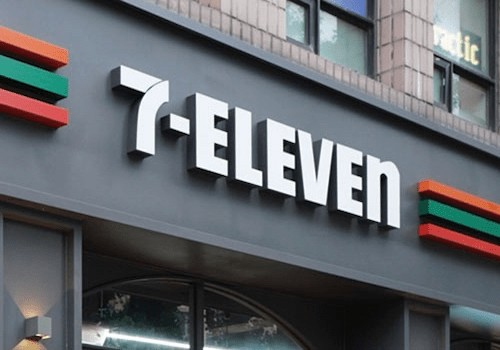
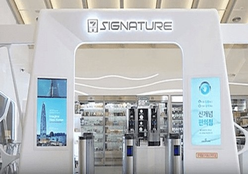
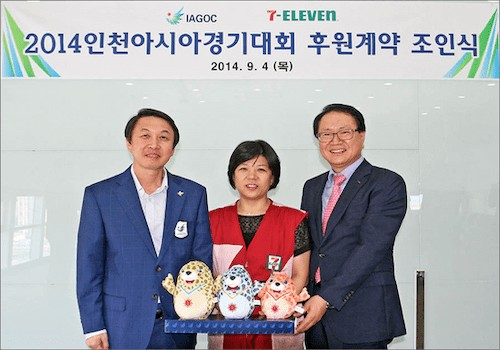
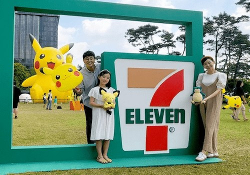

home > 회사소개 > 회사 연혁
회사 연혁
세븐일레븐은 언제나 당신 곁에서 따뜻한 불빛이 되어왔습니다
국내 첫 편의점으로 시작해, 일상 속 작은 순간들을 함께해왔습니다.
-
2020's Let's Play Together
- 2020's Let's Play Together
- 2024.03 2024 상품전시회 개최
- 2024.02 경영주 소통 정기 프로그램 ‘경영주 비즈니스 스터디’ 개최
- 2023.12 11대 김홍철 대표이사 취임
- 2023.09 업계 최초 규범준수 경영시스템 ISO 37301 인증 획득
- 2023.09 제31회 온라인 어린이 환경 미술대회 개최
- 2023.07 친환경 반값커피 구독 서비스 ‘그린아메리카노’ 론칭
- 2023.07 업계 최초로 서울시와 동행스토어 운영
- 2023.07 인공지능 챗GPT 기반 경영주 전용 AI챗봇 도입
- 2023.03 푸드드림2.0 모델 ‘푸드드림ECO’ 오픈
- 2023.02 ‘서울특별시’와 점포 내 자동심장충격기 설치 업무협약 체결
- 2023.02 플라스틱 얼음컵 종이얼음컵 전면교체
- 2023.01 ‘중고나라’와 비대면 중고거래 서비스 ‘세븐픽업’ 출시
- 2023.01 ‘2023 CES’ 실감형 메타버스 점포 최초 공개
- 2022.12 2022 일자리창출 유공 대통령표창 수상
- 2022.11 메타버스 플랫폼 ‘이프랜드’ 내 ‘세븐일레븐 이프랜드점’ 오픈
- 2022.10 제30회 온라인 어린이 환경 미술대회 개최
- 2022.09 라스트오더 배달 서비스 론칭
- 2022.08 롯데월드타워 광장 스마일링 포켓몬 플레이존 조성
- 2022.07 가평 드론 스테이션 갖춘 드론 배송 특화매장 오픈
- 2022.06 초저가 장보기 브랜드 ‘굿민’ 론칭
- 2022.05 창립 34주년 기념 플로깅 친환경 캠페인 진행개발
- 2022.03 코리아세븐-미니스톱 통합작업 시작
- 2021.02 메타버스 게임 ‘플레이투게더’에 점포 오픈
- 2021.01 업계 최초 ‘친환경 종이얼음컵’ 출시
- 2021.12 2021 노사문화유공’ 대통령상 수상
- 2021.11 실외 자율주행 로봇 배달 서비스 운영
- 2021.10 친환경 리필 스테이션 '그린필박스' 운영
- 2021.10 PB컵커피 브랜드 '세븐셀렉트 마쉼 컵커피' 론칭
- 2021.10 대중소기업농어업협력재단과 농어촌 상생협력기금 출연 협약 체결
- 2021.09 PB과일주스 브랜드 '담음' 론칭
- 2021.08 디지털 기술 연구소 'DT 랩 스토어' 오픈
- 2021.07 중소기업유통센터 상생형 온라인 쇼핑몰 '동반성장몰' 도입
- 2021.07 'ESG-UN SDGs 연계 분야' 최우수등급 AAA 획득
- 2021.06 100% 생분해성 원료로 만든 친환경 봉투 출시
- 2021.05 한부모가족회와 상생편의점 ‘엔젤스토어 1호점’ 오픈
- 2021.05 UN 우수사례 국제환경인증 ‘GRP’ 최우수등급 AAA 획득
- 2021.01 미래 10년 위한 ‘2030 ESG 경영’ 선포식
- 2020.11 페트병ㆍ캔 자동수거기 ‘순환자원 회수로봇’ 설치
- 2020.10 청산리전투 승전 100주년 기념 ‘김좌진 장군 독립서체’ 개발
- 2020.09 대전광역시, 대전지방경찰청 등과 ‘아동학대예방 선도 도시’ 업무협약 체결
- 2020.07 글로벌 세븐일레븐 71,100호점 오픈(세븐일레븐 푸드드림 방배점)
- 2020.07 세계 최초 고객동선인식(ETS) 기반 스마트편의점 ‘시그니처 DDR점’
- 2020.01 10대 최경호 대표이사 취임
-
2010's 끊임없는 발전과 혁신을 통한 진화
- 2010's 끊임없는 발전과 혁신을 통한 진화
- 2019.11 1만호점 오픈
- 2019.07 세븐일레븐데이 맞이 루게릭요양병원 건립 위한 아이스버킷 챌린지 동참
- 2019.07 프리미엄 편의점 모델 ‘푸드드림’ 오픈
- 2019.06 친환경 전기자동차 충전소 설치 협약식
- 2019.05 경영주 편의연구소 발족
- 2019.01 AI ‘챗봇 브니’ 서비스 오픈, ‘친절∙청결 1등 편의점’ 선포식
- 2018.10 SK가스 업무협약 체결
-
2018.08 핸드페이 탑재 인공지능 결제 로봇
‘브니(VENY)’ 도입
최첨단 자판기형 편의점 '세븐일레븐 익스프레스' 오픈 -
2018.05 세븐일레븐 본사 이전, 세븐일레븐 30년
사사
'가깝고 편리한 행복충전소 30년이야기' 발간 - 2018.04 세븐일레븐 ‘토니안 도시락’ 출시
- 2018.03 카카오모빌리티, ‘7분 행복충전 상생 캠페인’ 진행
- 2018.03 환경재단 ‘미세먼지 예방’ 상호 업무 협약 체결
- 2018.02 2018 평창 동계올림픽 기념 IBC점 오픈, 공식 상품 판매
- 2018.01 7대 행복충전 상생 프로그램 발표
- 2018.01 우리은행,동반성장위원회 가맹점 지원 업무 협약 체결
- 2017.12 KB국민은행 생활 금융 서비스 업무 협약 체결
- 2017.11 경기도개인택시조합 ‘7분 행복충전 상생 캠페인’ 체결
- 2017.11 배달의민족 업무 협약 체결
- 2017.11 롯데월드타워스마트점 ‘시그니처’ 무인계산대(컨베이어벨트) 특허 등록
- 2017.10 파트너사 식품 안전 결의대회, 대한스키협회 공식 후원 협약 체결
- 2017.09 반부패경영시스템(ISO37001)인증
- 2017.07 파트너사와 ‘동반성장 간담회’ 진행, 세븐일레븐 APP출시
- 2017.06 롯데–카카오뱅크 업무 협약 체결
- 2017.05 최첨단 스마트 편의점 ‘시그니처’ 오픈
- 2017.01 포켓몬고 인그레스 한국 런칭 MOU 체결
- 2016.11 NH농협 경영주 저금리 대출 업무협약 실시
- 2016.10 가맹점 상생협약식
- 2016.07 스마트픽 서비스 시행
- 2016.06 중소기업진흥공단 우수 중기상품 발굴·판로확대 위한 구매상담회 개최
- 2016.03 우수 중소기업 상품 구매 상담회 개최 (중소기업진흥공단)
- 2016.02 모바일 간편결제 서비스 ‘엘페이(L.Pay)’ 전 점 도입
- 2015.12 세븐카페 1,000호점 오픈
- 2015.10 미래형 친환경 편의점 가평 자전거테마파크점 오픈
- 2015.08 중소기업진흥공단 우수 중기상품 발굴·육성 위한 실물품평회 개최
- 2018.08 광복 70주년 기념 순항훈련 후원 물품 나눔활동 실시
- 2015.06 우수 중소기업 상품의 대형 유통망 진출 활성화 위한 업무협약 체결
- 2015.06 '에너지를 나누는 이로운 기업' 캠페인 실시
- 2015.04 세븐일레븐 말레이시아 PB상품 수출
- 2015.03 세븐일레븐 ‘혜리 도시락’ 출시
- 2015.01 업계최초 편의점 원두커피 브랜드 ‘세븐카페’ 런칭
- 2014.12 중소 파트너사와 ‘동반성장 상생협약’ 체결
- 2014.11 신개념 푸드스토어 도시락카페 1호점 ‘KT강남점’ 오픈
- 2014.09 2014 인천아시안게임 공식편의점 선정
- 2014.07 공정거래 자율준수 프로그램 도입 선포
- 2014.07 업계 최초 가맹점주 모집 세븐일레븐 모바일 쇼핑 앱(App) 출시
- 2014.05 시간선택제 ‘해피사원’ 채용 도입
- 2014.05 국가보훈처와 ‘제대군인 창업지원’ 협약 체결
- 2014.05 세븐일레븐 사가(社歌) ‘Seven Way’ 발표
- 2014.03세븐일레븐 통합 콜센터 ‘세븐콜’ 오픈
- 2014.02 9대 정승인 대표이사 취임
- 2014.01 스마트폰 발주서비스 오픈, 신규 세븐일레븐 가맹모델 도입
- 2013.05 세븐일레븐 가맹점주 상생협의체 구성
- 2013.02 KB국민은행, 적십자와 ‘사랑의 동전나눔 서비스’ 협약
- 2013.01 고용 창출 우수기업 선정
- 2012.10 ‘5호선 편의점 임대 사업’ 입찰 선정
- 2012.09 세븐일레븐 전용 캐시비 카드 ‘캐시비세븐’ 출시
- 2012.04 서울 중구 남창동으로 본사 사옥 이전
-
2012.02 롯데 슈퍼와 대학생 희망프로젝트 실시
(대학생 1천명 무이자 등록금 100억 지원) - 2011.11 업계최초 동방성장 웹사이트 오픈
- 2011.10 메트로 지하철 1~4호선 22개점 입점
- 2011.07 자체 모델 ‘세븐스타’ 1기 선정
- 2011.03 부산 지하철 역사 내 입점
- 2010.12 동반성장 및 공정거래 협약’ 체결
- 2010.08 씨티•부산은행과 롯데 ATM 서비스 업무 제휴
- 2010.07 세븐일레븐 제주도 진출
- 2010.04 ㈜바이더웨이 인수 합병
- 2010.02 8대 소진세 대표이사 취임
-
2000's 최고를 향한 도약
- 2000's 최고를 향한 도약
- 2007.08 지하철 5~8호선 구역 역사 내 편의점 단독 입점 사업권 계약체결
- 2007.07 7대 주우환 대표이사 취임
- 2005.02 6대 정황 대표이사 취임
- 2003.04 5대 박종규 대표이사 취임
- 2001.12 업계 최초 1,000개 점포 달성 (포이 5호점)
- 2001.04 업계 최초 TV CF 방영 시작 (삼각김밥)
- 2000.06 푸드 전용 생산 공장 롯데후레쉬델리카㈜ 용인공장 준공
- 2000.01 코오롱 마트 편의점 LAWSON인수 (248개점 인수, 점포 총계 500개점)
-
1990's 롯데와의 만남
- 1990's 롯데와의 만남
- 1999.04 ㈜롯데리아로부터 분리, ㈜코리아세븐 설립
- 1999.05 4대 신동빈 대표이사 취임
- 1999.09 최초 상품전시회 개최
- 1997.06 3대 이철우 대표이사 취임
- 1997.06 ‘㈜롯데리아 편의점 사업본부’로 개칭
- 1997.06 ㈜롯데리아로 합병,
- 1994.08 2대 강진우 대표이사 취임
- 1991.07 POS시스템 자체 개발
-
1980's 대한민국 최초의 편의점!
- 1980's 대한민국 최초의 편의점!
- 1989.05.06 세븐일레븐 1호점 "올림픽선수촌점" 오픈
- 1988.07 미국 SouthLand Co. (現 7-Eleven Inc.) 와 기술도입 계약체결
- 1988.05.21 ㈜코리아세븐 설립 초대 문용준 대표이사 취임
1989년 5월 6일 세븐일레븐 1호점 '올림픽선수촌점' 오픈"
1999년 ㈜코리아세븐 설립

2001년 업계 최초 TV CF 방영 시작
-
2019년 "1만호점" 오픈!!
 -
2018년 인공지능 결제 로봇 '브니' 도입
-
2017년 최첨단 스마트 편의점 '시그니처' 오픈
 -
2016년 간편결제 서비스 '엘페이(L.Pay)' 도입
-
2015년 업계최초 편의점 원두커피 브랜드 '세븐카페' 런칭
-
2014년 신개념 푸드스토어 도시락카페 1호점 오픈
-
2014년 인천아시안게임 공식편의점 선정
 -
2011년 메트로 지하철에 세븐일레븐 입점
-
2023년 업계 최초로 서울시와 동행스토어 운영
-
2022년 롯데월드타워 광장 스마일링 포켓몬 플레이존 조성
 -
2021년 미래 10년을 위한 2030 ESG 경영 선포
-
2020년 세계최초 고객동선인식(ETS) 기반 편의점 오픈
-
2020년 글로벌 세븐일레븐 71,100호점 오픈